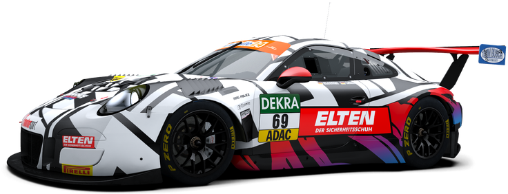
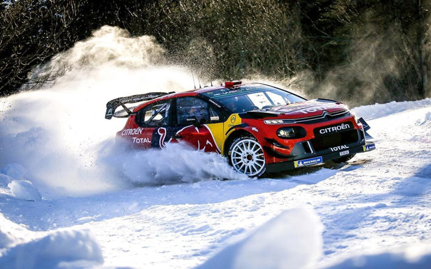

“La cosa più bella che può fare un uomo vestito è guidare di traverso” - Miki Biasion


WRC artic
per la prima volta nella sua storia il WRC affronterà il rigore e le temperature glaciali del Circolo Polare Artico: sono previsti 30° sotto lo zero brr...

WRC sardegna
inserita nel calendario del Campionato del mondo rally nel 2004 sostituendo il Rally di Sanremo in qualità di tappa italiana del campionato mondiale